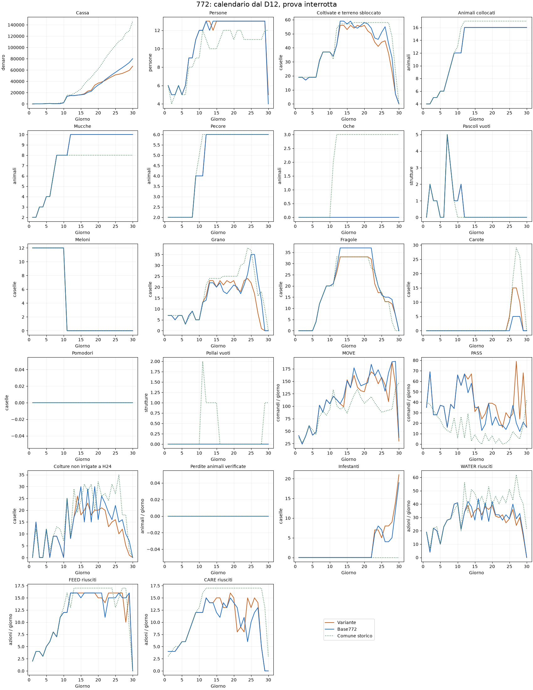

Un confronto completo conservato; prosecuzione interrotta su indicazione dell’utente per progettare il piano da D1. Apertura e dispatcher della772 pubblicata invariati; quote e successione colturale modificate. Nessuna conclusione su una suite completa.
Controllo:772 E20.1 loaderfix pubblicata, submission56142698. Stesso seed, ruolo e avversario775. Mercato e avversario reagiscono alle azioni: non è una prova a prezzi fissati. Seed esposti, nessuna validazione indipendente; seed180912401–407 inutilizzati. Nessuna pubblicazione.
| Seed | Ruolo | Cassa variante | Cassa base | Delta | Topologia | C/S/G | Chiamate | Errori core | Gate tecnico |
|---|---|---|---|---|---|---|---|---|---|
| 180911301 | 0 | 66774 | 80178 | -13404 | [7, 7, 2] | [10, 6, 0] | 719 | 0 | True |
| Giorno | Modello | Meloni | Grano | Fragole | Carote | Mucche | Pecore | Persone |
|---|---|---|---|---|---|---|---|---|
| D1 | Variante | 12.0 | 7.0 | 0.0 | 0.0 | 2.0 | 2.0 | 6.0 |
| D1 | Base772 | 12.0 | 7.0 | 0.0 | 0.0 | 2.0 | 2.0 | 6.0 |
| D1 | Comune storico | 12.0 | 7.0 | 0.0 | 0.0 | 2.0 | 2.0 | 6.0 |
| D6 | Variante | 12.0 | 3.0 | 4.0 | 0.0 | 4.0 | 2.0 | 6.0 |
| D6 | Base772 | 12.0 | 3.0 | 4.0 | 0.0 | 4.0 | 2.0 | 6.0 |
| D6 | Comune storico | 12.0 | 3.0 | 4.0 | 0.0 | 4.0 | 2.0 | 5.0 |
| D9 | Variante | 12.0 | 5.0 | 20.0 | 0.0 | 8.0 | 4.0 | 11.0 |
| D9 | Base772 | 12.0 | 5.0 | 20.0 | 0.0 | 8.0 | 4.0 | 11.0 |
| D9 | Comune storico | 12.0 | 5.0 | 20.0 | 0.0 | 8.0 | 4.0 | 9.0 |
| D11 | Variante | 0.0 | 13.0 | 21.0 | 0.0 | 8.0 | 4.0 | 12.0 |
| D11 | Base772 | 0.0 | 13.0 | 21.0 | 0.0 | 8.0 | 4.0 | 12.0 |
| D11 | Comune storico | 0.0 | 12.0 | 20.0 | 0.0 | 8.0 | 6.0 | 12.0 |
| D12 | Variante | 0.0 | 16.0 | 26.0 | 0.0 | 10.0 | 6.0 | 13.0 |
| D12 | Base772 | 0.0 | 14.0 | 28.0 | 0.0 | 10.0 | 6.0 | 13.0 |
| D12 | Comune storico | 0.0 | 21.0 | 33.0 | 0.0 | 8.0 | 6.0 | 11.0 |
| D15 | Variante | 0.0 | 20.0 | 33.0 | 0.0 | 10.0 | 6.0 | 13.0 |
| D15 | Base772 | 0.0 | 20.0 | 37.0 | 0.0 | 10.0 | 6.0 | 13.0 |
| D15 | Comune storico | 0.0 | 24.0 | 33.0 | 0.0 | 8.0 | 6.0 | 10.0 |
| D20 | Variante | 0.0 | 23.0 | 33.0 | 0.0 | 10.0 | 6.0 | 13.0 |
| D20 | Base772 | 0.0 | 21.0 | 37.0 | 0.0 | 10.0 | 6.0 | 13.0 |
| D20 | Comune storico | 0.0 | 25.0 | 33.0 | 0.0 | 8.0 | 6.0 | 11.0 |
| D25 | Variante | 0.0 | 22.0 | 17.0 | 5.0 | 10.0 | 6.0 | 13.0 |
| D25 | Base772 | 0.0 | 35.0 | 16.0 | 0.0 | 10.0 | 6.0 | 13.0 |
| D25 | Comune storico | 0.0 | 37.0 | 17.0 | 4.0 | 8.0 | 6.0 | 11.0 |
| D30 | Variante | 0.0 | 0.0 | 0.0 | 0.0 | 10.0 | 6.0 | 5.0 |
| D30 | Base772 | 0.0 | 0.0 | 0.0 | 0.0 | 10.0 | 6.0 | 4.0 |
| D30 | Comune storico | 0.0 | 0.0 | 0.0 | 0.0 | 8.0 | 6.0 | 12.0 |
| Misura media per partita | Variante | Base772 |
|---|---|---|
| Vendite | 96219.0 | 110419.0 |
| Acquisti | 22042.0 | 22841.0 |
| Assunzioni | 7403.0 | 7400.0 |
| Perdite colture per sete | 5.0 | 4.0 |
| Fughe animali | 0.0 | 0.0 |
Curve medie dei soli casi eseguiti. Il riferimento comune è descrittivo, da altra partita e altro mix animale.

Protocollo e hash in PROTOCOL.json; risultati integrali in RESULTS.json e negli artefatti replay/KPI. Il controllo iniziale della prova calendar772_c1 è stato corretto per distinguere core_errors=null della775 da un errore; policy invariata e audit conservato.